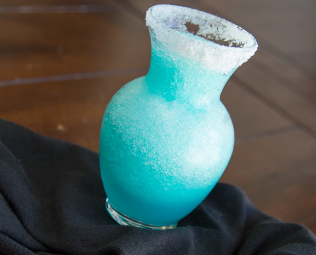

Ashen Flask

Refills your focus points.
"Undead treasure these dull ashen flasks. Fill with Estus at bonfires, and drink to restore FP. Quite befitting of an Unkindled, an Ashen Estus Flask turns a bonfire's heat cold."
Ingredients:
- 4 oz tequila
- 2 oz curacao
- 2 oz triple sec
- 3 oz lime juice
- 1 ½ cup ice cubes
- 2 tsp sugar
- salt
- lime
- a flask
Instructions:
- Place the ice cubes in a blender. Pour the tequila, curacao, triple sec, lime juice and sugar on top of the ice cubes.
- Blend by using the crush setting on your blender, until the mixture resembles a slushie.
- Take the flask you will be filling with the beverage and rub a half of a lime on the rim.
- Pour some salt on a plate. Place the flask rim down on the plate and cover the rim with salt.
- Pour drink into flask and enjoy!
Return to Recipes